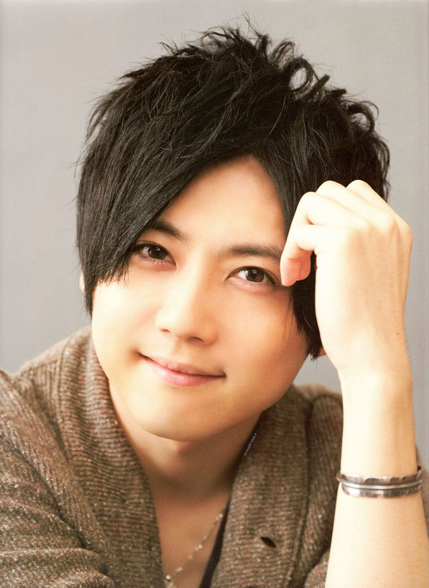
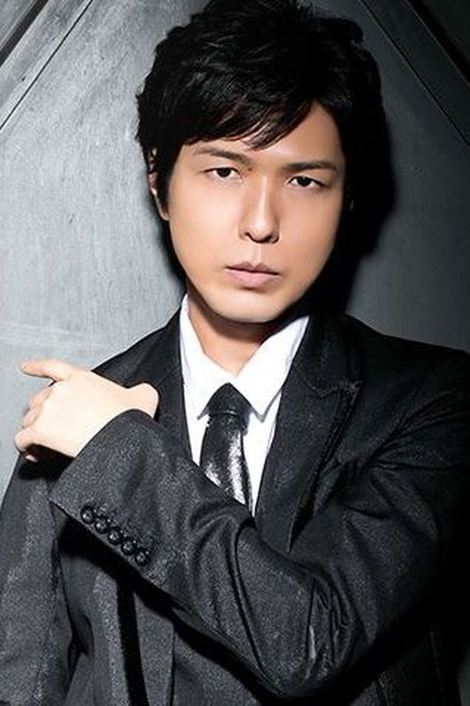
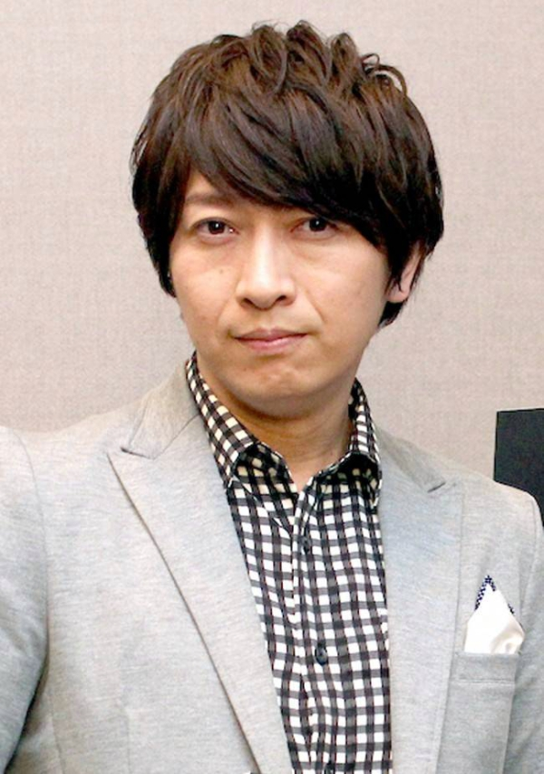
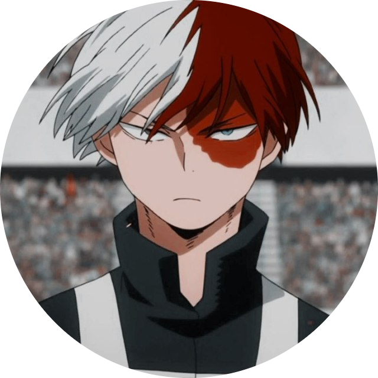
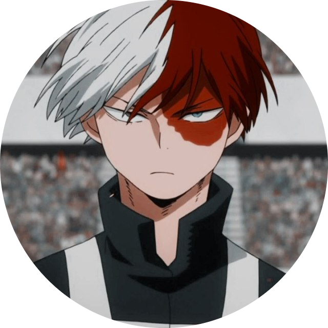
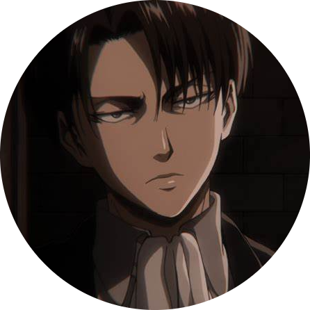
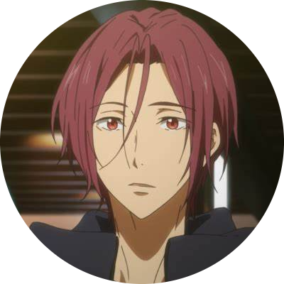
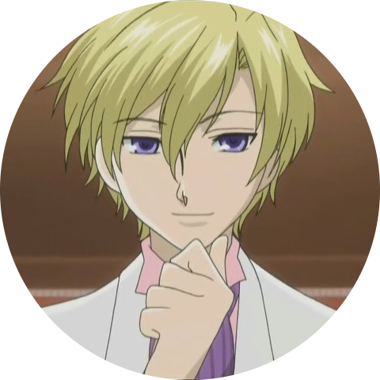
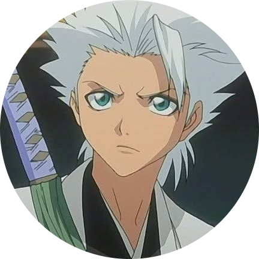
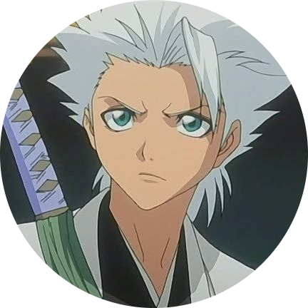

Yūki Kajis
Hiroshi Kamiya
Mamoru Miyano
Daisuke Ono
Romi Park
.png)   |
Eren Jaeger's signature scream is the work of prolific voice actor Yūki Kaji, who has worked in the industry since 2004. Besides providing the voices for a wide variety of anime characters, Kaji also hosts a web radio series and variety show. In addition, he once participated in a four-person singing group. |
  |
Hiroshi Kamiya is a Japanese voice actor from Chiba, Japan, who's been active in the industry since 1994. In addition to playing the protagonists of a variety of series, he also hosts a radio show and provides the voices for Boys Love CDs - audio stories from the BL genre. |
  |
If you remember Light Yagami taking a potato chip and eating it, or the character Rin Matsuoka crying, you remember Mamoru Miyano's voice. Miyano began voice acting in 1990 and, in 2007, he began working as a pop and rock musician. He has won multiple awards, including "best musical performance" in the sixth and eighth Seiyuu awards, as well as "best lead actor" in the 2011 Newtype Awards. |
.png) .png) |
Daisuke Ono is an established voice acting talent who is responsible for a number of protagonists' voices. In an impressive victory, Ono won the fourth and ninth Seiyu Awards for "best lead actor" for his roles as Sebastian Michaelis and Jotaro Kujo. He also hosts a radio show called Dear Girls Stories along with fellow voice actor Hiroshi Kamiya. |
    |
Romi Park is a Korean-Japanese voice actress who was born in Edogawa, Tokyo. She tends to play tough, aggressive female characters and male characters who are considered geniuses - Edward Elric (one of her most notable roles) is a clear example of this. Park has also provided voices for video game characters and Japanese dubs of Western media, such as Guardians of the Galaxy and The Matrix Revolutions. |